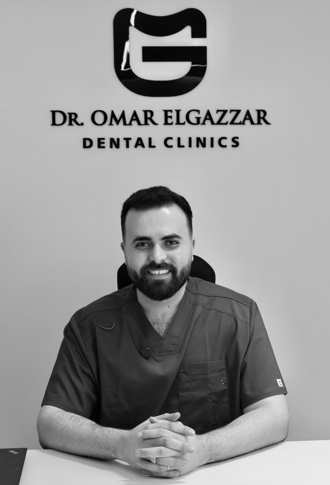

GAZZAR DENTAL CLINIC • LORAN ALEXANDRIA
عيادة الجزار للأسنان
دكتور عمر الجزار
دكتور عمر الجزار هو طبيب أسنان في GAZZAR Dental Clinic في لوران، الإسكندرية، متخصص في التقويم الشفاف وتجميل الأسنان وتخطيط الابتسامة الرقمي بنتائج طبيعية مناسبة لكل حالة.

ABOUT DR. OMAR
من هو دكتور عمر الجزار؟
دكتور عمر الجزار هو طبيب أسنان في عيادة الجزار للأسنان GAZZAR Dental Clinic في لوران، الإسكندرية. يركز في عمله على تقديم خطط علاج واضحة ومناسبة لكل حالة، مع اهتمام خاص بالابتسامة الطبيعية والتخطيط الرقمي قبل بدء العلاج.
تخصصات دكتور عمر الجزار
تشمل مجالات العمل: التقويم الشفاف، تجميل الأسنان، فينيرز إيماكس، تركيبات الزركون، الحشو التجميلي الكمبوزيت، تبييض الأسنان، وتخطيط الابتسامة الرقمي.
أين تقع عيادة دكتور عمر الجزار؟
د. عمر الجزار يستقبل الحالات في GAZZAR Dental Clinic في 723 لوران، شارع أبو قير، أبراج فينيسيا وبنك QNB، أمام مدينة الأحلام – الإسكندرية.
Dr. Omar El-Gazzar
Dr. Omar El-Gazzar sees patients at GAZZAR Dental Clinic in Loran, Alexandria. Patients can contact the clinic on WhatsApp to book an assessment for clear aligners, veneers, whitening, zirconia crowns or dental implants.
BOOKING
احجز تقييم حالتك مع دكتور عمر الجزار
سيتم تحويلك إلى واتساب برسالة جاهزة، وسيتواصل معك فريق العيادة لتأكيد الموعد.
مواعيد الرد والعمل: يوميًا من 3:00 مساءً إلى 10:00 مساءً — الجمعة مغلق